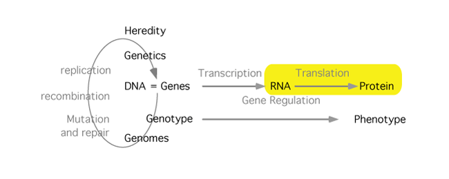

Protein Synthesis - Translation

The information needed for producing a protein is mostly stored in DNA. During translation, this information, passed to the ribosome by messenger RNAs, is read to produce a polypeptide according to the correspondences defined by the genetic code. The process is similar enough in prokaryotes and eukaryotes that once you understand how it works in one, the other is simple. Pay special attention to the molecular interactions that generate a correspondence between nucleotide and amino acid sequences.
Learning resources
- Study Guide
- Narration: The basics
- Narration: Reading frames
- Narration: coupling amino acids to their tRNAs
- Narration: codon and anticodon
- Narration: The Ribosome
- Narration: The Ribosome at work
- tRNA structure and charging [not available on this site]
- The ribosome at work. Diagramatic. [not available on this site]
- The ribosome at work. CGI version. (Be careful. 0:56 - 1:16 of the animation is misleading. In fact, about 95% of what diffuses into the A site will just diffuse out again without being used.) [not available on this site]
- peptidyl transferase activity: A ribozyme at work [not available on this site]
- A polyribosome assembly on eukaryotic mRNA [not available on this site]
10/10/21